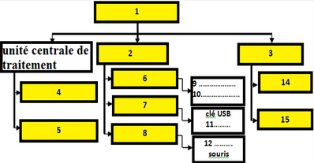

Évaluation N°2
1- Compléter le schéma suivant :

2- Combien de bits sont-ils nécessaires pour 512 informations ?
3- Qu’est-ce qu’un microprocesseur ?
4- Citer les composants principaux d’un microprocesseur
5- Expliquer à l’aide d’un tableau les différences entre RAM et ROM
6- Citer quatre ports de la carte mère en précisant les composants correspondants
7- effectuer les calculs suivants:
- 76)10 = ……..)2 et 69)10 = ………..)2
- 101011)2 = ……..)10 et 1101001)2 = ………..)10
- 236 bits - 222 M0 = ……..GO